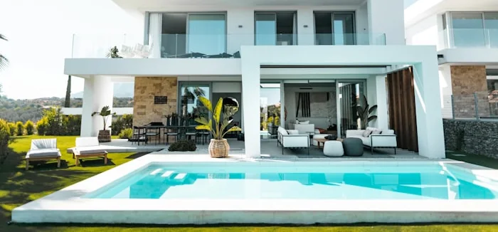
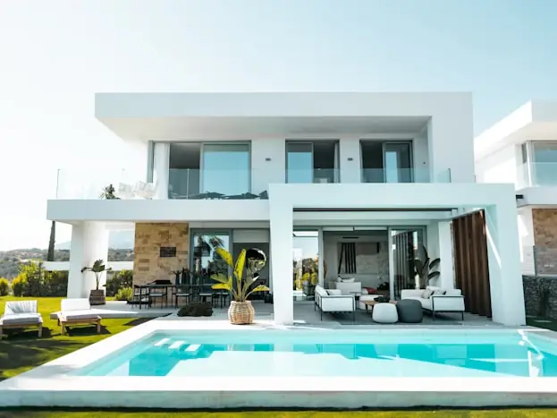

Pool Areas
Choosing Pool Deck Materials for South Florida
Do not start with the samples. Start with the five complaints, because every surround that disappoints its owner does so in one of them.
Choose backwards
The usual way to pick a pool deck is to look at four or five materials, decide which is prettiest within budget, and find out over the following two summers what you traded away. It is a reasonable process that produces a lot of regret, because the things people end up unhappy about are not the things a sample board shows you.
So work backwards instead. Below are the five complaints that account for nearly every unhappy surround in this climate. Read them, decide which two matter most on your property, and the material list narrows itself. Most homeowners find the answer is not the material they walked in wanting — and occasionally that the material was never the problem.
Work backwards from these
The five complaints
-
"We can't walk on it barefoot"
The most common one by a distance. It is largely about colour and about how much sun the area gets, and it is not solved by any material on its own. If this is your top concern, the honest answer involves shade as much as surface — see the section on what actually helps below.
-
"It's slippery when it's wet"
Almost always a finish question rather than a material question. The same stone in a polished finish and a textured one behave completely differently underfoot, and the polished version is usually the one in the showroom because it photographs better.
-
"It stains"
Sunscreen, leaf tannin, spilled drinks, fertiliser tracked in from the lawn, and pool water drying on the surface all leave marks. How much they show depends on porosity and on how pale and uniform the surface is.
-
"There's always water sitting in that one spot"
Not a material fault at all. This is levels, and it was decided before anything was laid. No surface choice fixes a surround that was built without a fall to somewhere the water can actually go.
-
"It looked nothing like this in the yard"
Natural stone varies piece to piece, and a 300mm sample tells you very little about how a whole deck will read. Manufactured units are consistent but can look flat across a large area if the format was chosen without seeing it at scale.
The shortlist
Four materials, scored against the complaints
These are the four that come up in nearly every South Florida surround conversation. What follows describes how these material families tend to behave, and applies to no specific product.
| Material | Strong on | Weak on | Worth knowing |
|---|---|---|---|
| Travertine | Barefoot comfort and wet grip, in the textured finishes normally specified for surrounds. Pale by nature. | Staining — it is porous, and pool chemistry plus sunscreen reach it constantly. | Piece-to-piece variation is inherent. Ask to see more than one sample, ideally a laid area. |
| Porcelain | Staining and consistency. Very low absorption, and colour that does not drift across the deck. | Installation is less forgiving, and the wrong finish is genuinely slick when wet. | Specify the finish for external wet use explicitly. Do not let an indoor-grade finish onto a pool deck. |
| Concrete pavers | Range. More sizes, tones and surface textures than the other three combined, and a single damaged unit can be swapped out. | The colour is made rather than quarried, which means a deck laid from mixed production runs can show it. | New units can show efflorescence, a surface bloom that generally weathers off. Ask about it up front. |
| Shell or coral stone | Regional character and a naturally textured face. Pale, and long used around water here. | Soft and porous compared with porcelain, so it wants a considered position on sealing. | Its look is the reason people choose it. Judge it on that and on upkeep, not on hardness. |
Notice what the table does not contain: a winner. Travertine and porcelain trade the same two properties against each other — comfort and porosity against consistency and stain resistance — and which trade is right depends on whether your deck is shaded or exposed, and on how much cleaning you are willing to do.
Read this before any showroom visit
The word to be suspicious of
"Slip-proof" is not a property that exists. Neither is "non-slip" as an absolute. Every wet surface loses grip, and what varies between products is how much traction is retained — which depends on texture, on what is on the surface at the time, and on how someone is moving across it.
A salesperson who tells you a material is slip-proof has either been trained badly or is hoping you will not ask what the word means. The useful conversation is comparative: this finish holds more than that one, this run of deck is where people will be wet and moving fastest, so treat that run differently.
It is also worth being clear that grip is one factor among several around water, and a surface specification is not a substitute for supervision. Anyone selling you a floor as a safety product is overselling a floor.
What to ask instead
"What is the finish, and is it specified for external wet use?" — a real question with a documented answer.
"Can I stand on a wet sample?" — a reasonable request, and revealing.
"Where are the wet routes on my deck?" — the steps out of the water, the path to the door, the towel corner. Those runs may deserve a different finish from the rest.
The overlooked variable
Finish and colour decide more than the material name
Colour beats composition for heat
A pale unit of almost anything is more bearable than a dark unit of almost anything. If barefoot comfort is complaint number one, sort colour first and material second.
Texture beats material for grip
Two decks in the same stone can behave completely differently wet. The finish is the specification line that matters, and it should appear in your quote.
Format changes how a deck reads
Large-format units on a small surround can look cramped and produce awkward cuts; small units across a large deck can read as busy. Judge format against your actual dimensions.
Shade beats everything for comfort
Cover over part of the deck changes usable hours more than any surface decision. It is a structural item, so it belongs in the plan early — see the pergola versus tiki hut guide.
Sealing is a choice, not a default
It changes appearance, needs redoing, and matters more on porous materials. Ask what it does to the finish and to wet grip before agreeing to it.
See it laid, not sampled
Ask to see the material as a laid area somewhere — a supplier's yard will usually have one. A single tile in your hand is the least informative way to choose a deck.
Most projects are not new builds
If there is already a deck there
Then the material question is the second question. The first is whether the existing slab can stay.
Where it is sound and stable, a new surface can sometimes go over it, provided the added height still works at the coping, at the door thresholds and at any screen enclosure anchored to it. That is a real saving and it is worth asking about.
Where it has cracked because the ground under it moved, laying anything over the top inherits the movement, and the new surface will eventually show what the old one showed. That is not a material failure waiting to happen — it is the same failure continuing.
Which case applies is established by looking at it, not by its age, and any quote that skips that assessment is quoting a surface rather than a project. The decision and its consequences are set out on the pool decks page.

Putting it together
Narrowing it down in four moves
One. Rank the five complaints for your property. Not in the abstract — for your deck, with its orientation, its shade and the people who use it. Two of them will matter far more than the other three.
Two. Eliminate on the weak column, not the strong one. Every material in the table is good at something; the question is whether you can live with what it is bad at. If nobody in the house will clean a porous surface, that decides more than any advantage travertine has.
Three. Fix colour and finish before you fix material. Those two lines do most of the work on the complaints that people actually voice later.
Four. Check the levels question separately. Drainage is not a material property and it will not be solved by the shortlist. If water stands on your deck today, that is a groundwork item in the scope, and a quote that does not mention it has not priced the problem you have.
Do that and the shortlist is usually two materials, both of which would be fine. At that point choose the one you prefer looking at — which is, finally, a legitimate reason to choose a pool deck.
Where this comes up
Surround remodels dominate in the pool-heavy suburban markets — Coral Springs and Weston especially, where a great many decks were built with the house and are now on their second act. Near the coast in Fort Lauderdale, surrounds tend to be narrow enough that where the usable width goes matters more than which stone it is made of.
Bring us your two complaints
Tell us which of the five matter most on your deck and we will tell you, on site, which materials survive that filter and whether the slab underneath can stay.